철도신호산업기사 (2019-08-04 기출문제)
1과목: 전자공학
1. 전압이득이 50인 저주파 증폭기의 외율이 5%일 경우 이를 1%로 개선하기 위한 부귀환율 β는?
- 0.84
- 0.42
- 0.12
- 0.08
(정답률: 69%)

2. 다음의 다이오드회로가 정논리일 때 가지는 논리기능은?
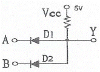
- AND 게이트
- OR 게이트
- NOT 게이트
- NAND 게이트
(정답률: 84%)
3. 트랜지스터의 스위칭 동작에서 turn-off 시간은?
- 지연시간(td)
- 지연시간(td)+상승시간(tr)
- 축적시간(ts)
- 축적시간(ts)+하강시간(tf)
(정답률: 80%)
4. FET에서 핀치 오프(pinch off) 전압이란?
- FET에서 에벌런치 전압
- 채널 폭이 막힌 때의 게이트의 역방향 전압
- D-S 사이의 최대 전압
- 채널 폭이 최대로 되는 게이트의 역방향 전압
(정답률: 71%)
5. PLL(Phase Locked Loop)의 구성요소가 아닌 것은?
- 슈미트 트리거
- 증폭기
- 위상검출기
- 저역필터
(정답률: 70%)
6. 이미터 플로어 증폭기의 일반적인 특징으로 틀린 것은?
- 전류이득이 크다.
- 입력 임피던스가 높다.
- 출력 임피던스가 높다.
- 전압이득은 1보다 작다.
(정답률: 65%)
7. 010100011011(2)을 16진수로 변환하면?
- 313(16)
- 41C(16)
- 51B(16)
- 81C(16)
(정답률: 83%)
8. AM 변조시 변조도가 40%인 진폭변조 송신기에서 반송파의 평균 전력이 400mW일 때 피변조파의 평균전력은 몇 mW인가?
- 382
- 408
- 432
- 540
(정답률: 75%)
9. 다음과 같은 연산 증폭회로의 역할은?
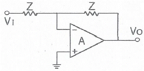
- 감산기
- 부호변환기
- 단위이득 플로어
- 전압 전류 변환기
(정답률: 78%)
10. SR 플립플롭에서 부정상태를 제거하기 위하여 NOT 게이트를 추가하여 만든 플립플롭으로 옳은 것은?
- JS 플립플롭
- D 플립플롭
- JK 플립플롭
- T 플립플롭
(정답률: 72%)
11. 연산증폭기에서 차동 신호에 대한 전압이득이 10000이고 공통모드 신호에 대한 전압이득이 0.5일 때 증폭기의 CMRR은 약 몇 dB인가?
- 86
- 80
- 72
- 60
(정답률: 61%)
12. 다음 검파기 중 SSB 검파에 가장 적합한 것은?
- 링 검파기
- 다이오드 검파기
- 퀘드래처 검파기
- 비 검파기
(정답률: 80%)
13. 변조도(ma)가 80%인 AM 피변조파 신호를 제곱 검파 했을 때 왜율은?
- 8%
- 10%
- 20%
- 32%
(정답률: 70%)
14. 듀티 사이클이 0.1이고 펄스폭이 0.4μs 인 펄스의 주기는?
- 4μs
- 5μs
- 6μs
- 7μs
(정답률: 77%)
15. RLC 직렬공진 회로에서 선택도 Q는? (단, ωo는 공진 시 각주파수이다.)
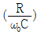
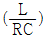
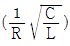
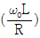
(정답률: 80%)
16. 회로 내의 분포용량, 표유 인덕턴스 또는 회로 정수의 불평형에 의해서 다른 주파수의 발진이 생기는 현상은?
- 고유 진동 발진
- 이완 발진
- 다이나트론 발진
- 기생 발진
(정답률: 71%)
17. 주어진 전압 파형을 그대로 유지하면서 기준레벨에서 위아래로 전압레벨을 올려 주거나 내려 주는 회로는?
- 클램퍼(clamper) 회로
- 클리퍼(clipper) 회로
- 리미터(limiter) 회로
- 슬라이서(slicer) 회로
(정답률: 70%)
18. 5비트 리플 카운터(ripple counter)의 입력에 4MHz의 구형파를 인가할 때 최종단 플립플롭의 주파수는?
- 125 kHz
- 250 kHz
- 500 kHz
- 800 kHz
(정답률: 60%)
19. 반도체에서 전기장을 가하지 않아도 캐리어의 밀도 차이에 의해서 흐르는 전류는?
- 포화전류
- 확산전류
- 전도전류
- 드리프트전류
(정답률: 70%)
20. 전력 증폭기의 직류 입력이 60V, 100mA이고, 효율이 90%이라면 부하에서의 출력 전력은?
- 1.8W
- 3.6W
- 5.4W
- 7.2W
(정답률: 67%)
2과목: 신호기기
21. 단상 반파정류회로의 정류 효율(%)은?
- 30.6
- 40.6
- 61.2
- 81.2
(정답률: 72%)
22. 유극 3위 계전기에 대한 설명으로 옳은 것은?
- 전원이 차단되면 구성되는 접점은 없다.
- 무여자일 때에는 반위 접점만 구성된다.
- 여자일 때에는 정위 접점만 구성된다.
- 흡인되었을 때 구성되는 접점을 반위접점이라 한다.
(정답률: 76%)
23. 4극 증권, 도체수 220개, 1극당의 자속 0.02 Wb의 직류전동기가 있다. 부하 전류가 80A 일 때 토크(N·m)는 약 얼마인가?
- 56.02
- 65.04
- 74.04
- 82.02
(정답률: 59%)
24. 일반적으로 3상 변압기의 병렬 운전이 불가능한 결선은?
- △-Y 와 Y-△
- △-Y 와 △-Y
- Y-△ 와 Y-△
- △-Y 와 Y-Y
(정답률: 83%)
25. 출력 150kW, 4극 60Hz인 3상 유도전동기를 전부하운전할 때의 슬립이 4%이다. 전부하시의 토크(N·m)는 약 얼마인가?
- 84.64
- 94.64
- 104.81
- 114.81
(정답률: 55%)
26. NS형 전기 선로전환기가 정위에서 반위로 동작 후 제어전원이 차단되었다. 이 때 제어계전기의 동작 설명으로 옳은 것은? (단, 다른 모든 기능은 정상)
- 동작을 멈춘다.
- 정위로 된다.
- 반위로 유지된다.
- 기동이 안 된다.
(정답률: 65%)
27. 3상 유도전동기가 주파수 50Hz, 회전수 500rpm으로 운전하고 있다. 이 전동기의 극수는?
- 10극
- 12극
- 14극
- 16극
(정답률: 83%)
28. 농형 유도전동기의 기동법으로 틀린 것은?
- 기동보상기법
- Y-△ 기동법
- 2차저항법
- 전전압기동
(정답률: 74%)
29. 권수비가 30인 변압기의 1차에 6300V를 가했을 경우 2차전압(V)은? (단, 변압기의 저항, 누설리액턴스, 여자전류, 철손 등은 무시한다.)
- 1⑤
- 210
- 230
- 420
(정답률: 82%)
30. 종속신호기의 종류에 속하지 않는 것은?
- 출발신호기
- 원방신호기
- 중계신호기
- 통과신호기
(정답률: 72%)
31. 직류를 교류로 변환하는 기기는?
- 인버터
- 사이클로 컨버터
- 초퍼
- 회전 변류기
(정답률: 79%)
32. 직류전동기에서 사용하는 속도제어 방법이 아닌 것은?
- 저항제어법
- 계자제어법
- 전압제어법
- 2차여자법
(정답률: 73%)
33. 2420형 건널목제어자의 회로구성 방식은?
- 개전로식
- 폐전로식
- 궤도회로식
- 개폐전로식
(정답률: 68%)
34. 건널목전동차단기에서 건널목을 차단했을 때 차단봉의 높이는? (단, 차단봉은 일반형이고 도로면에서 차단봉 중심까지의 높이를 구한다.)
- 600 ± 100mm
- 700 ± 100mm
- 800 ± 100mm
- 900 ± 100mm
(정답률: 72%)
35. 건널목 보안장치의 제어 방법 중 궤도회로를 이용하는 연속 제어법의 특징으로 틀린 것은?
- 열차 점유에 따라 궤도계전기가 무여자하는 특성을 이용한다.
- 단선 구간 제어에 궤도연동계전기 또는 궤도계전기를 사용한다.
- 비자동, 비전철 구간에 주로 사용된다.
- 고주파를 사용 근거리에서 감쇄되는 특성을 이용한다.
(정답률: 70%)
36. 정전 시 무정전전원장치(UPS)의 출력 전압 변동 범위는 정격 전압의 몇 % 이내로 유지되어야 하는가?
- 10%
- 20%
- 30%
- 40%
(정답률: 73%)
37. 어떤 주상 변압기가 과부하의 4/5부하일 때, 최대 효율이 된다고 한다. 최대 효율에서의 철손과 동손의 비(Pi/Pc)는 약 얼마인가?
- 1.25
- 1.56
- 1.64
- 1.75
(정답률: 64%)
38. 변압기의 내부고장 보호용으로 사용되는 계전기는?
- 역상 계전기
- 과전류 계전기
- 비율차동 계전기
- 과전압 계전기
(정답률: 69%)
39. 전기선로전환기별 동작시분으로 옳은 것은?
- 차상선로전환기 : 2초 이하
- MJ81형 : 6초 이하
- 침목형 : 6초 이하
- NS형(마찰클러치형) : 8초 이하
(정답률: 57%)
40. 건널목 제어유니트 중 복선 제어자용으로 사용되는 제어유니트는?
- DC형 제어유니트
- STB형 제어유니트
- DTB형 제어유니트
- SC형 제어유니트
(정답률: 61%)
3과목: 신호공학
41. 궤도회로 내의 임의의 점 X에서 단락감도의 표현식은? (단, G : X점에서 본 회로 전체의 어드미턴스, F : 동작전압/낙하전압)
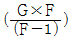
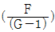
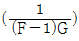
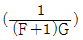
(정답률: 70%)
42. 속도 72km/h로 운행 중인 열차를 정차시키고자 한다. 공주시간이 5초일 때 공주거리(m)는?
- 25
- 100
- 360
- 400
(정답률: 84%)
43. 출발신호기의 경우 통과신호 취급을 할 수 없거나 장내신호기 진입속도를 제한하는 경우에 확인 거리는 몇 m 이상으로 해야 하는가?
- 100
- 200
- 300
- 400
(정답률: 73%)
44. 건널목 보안장치에서 일반형 전동차단기의 제어전압은 정격값의 몇 %로 하는가?
- 20∼50%
- 60∼80%
- 90∼120%
- 150∼190%
(정답률: 88%)
45. 연동도표의 부호 중 쇄정에 대한 설명으로 틀린 것은?
- ○를 붙인 것은 반위 쇄정되어지는 것을 표시
- [ ]를 붙인 것은 철사쇄정임을 표시
- { }를 붙인 것은 취급버튼이 전기적인 연쇄에 의한 것을 표시
- ◎은 전기 또는 전자연동장치에 있어서 일괄제어되는 것을 표시
(정답률: 74%)
46. 복선구간에 사용되는 상용폐색방식이 아닌 것은?
- 자동폐색식
- 차내신호폐색식
- 연동폐색식
- 통표폐색식
(정답률: 77%)
47. 연동장치의 쇄정방법 중 “갑”과 “을”의 취급버튼 상호간에 쇄정하는 “갑”의 취급버튼을 정위로 복귀하여도 “을”의 취급버튼은 일정 시간이 경과할 때까지 해정되지 않도록 하는 쇄정은?
- 진로구분쇄정
- 보류쇄정
- 시간쇄정
- 폐로쇄정
(정답률: 83%)
48. 고전압 임펄스 궤도회로의 주요 구성이 아닌 것은?
- 임피더스본드
- 전압안정기
- 커플링 유니트
- 송·수신기
(정답률: 71%)
49. 시스템의 가용성을 나타내는 식으로 옳은 것은?
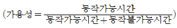
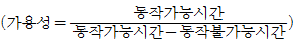
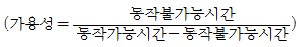
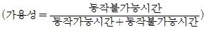
(정답률: 79%)
50. 신호기의 정위에 대한 설명으로 옳은 것은?
- 장내신호기 : 진행
- 엄호신호기 : 진행
- 원방신호기 : 정지
- 유도신호기 : 소등
(정답률: 70%)
51. 선로전환기 정위 결정법에 대한 설명으로 틀린 것은?
- 본선과 본선 또는 측선과 측선의 경우 주요한 방향
- 탈선 선로전환기는 탈선시키는 방향
- 본선 또는 측선과 안전측선이 경우 안전측선 방향
- 본선과 측선의 경우는 측선방향
(정답률: 84%)
52. 3현시 ATS 장치의 성능 중 지상장치의 성능에 대한 설명으로 옳은 것은?
- 공진주파수 : 102MHz
- Q(선택도) : 126±15
- 제어케이블 : 6m
- 지상자 제어계전기 : DC 10V, 0.12A, 접점수 N2
(정답률: 84%)
53. 고속철도안전설비 중 차축온도 검지장치에 대한 설명으로 틀린 것은?①②③④
- 약 30km 간격으로 상·하행선에 설치한다.
- 유지보수가 용이한 개소에 설치한다.
- 중간기계실로부터 2km 이내에 설치한다.
- 상시제동구간은 설치 간격을 좁힌다.
(정답률: 76%)
54. 엄호신호기에서 접근쇄정의 해정시분은?
- 40초±10%
- 50초±10%
- 60초±10%
- 90초±10%
(정답률: 69%)
55. 고속철도 UM71궤도회로 구성 기기 중 전류를 감쇄시키기 위하여 사용하며 송신기와 수신기 케이블의 길이가 동일하게 구성하도록 하는 것은?
- 방향계전기
- 거리조정기
- 동조유니트
- 정합변성기
(정답률: 88%)
56. 궤도회로 시구간에 대한 설명으로 옳은 것은?
- 역구간 분기부 사구간의 길이는 10m로 한다.
- 사구간이 1200mm 인 경우에는 궤도회로를 10m 이상 이격시킨다.
- 사구간의 길이는 7m 이하로 한다.
- 사구간이 7m인 경우에는 궤도회로를 5m 이상 이격시킨다.
(정답률: 79%)
57. 다음 그림과 같은 방법으로 구성한 궤도회로는?①②③④
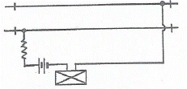
- AF 궤도회로
- 개전로식 궤도회로
- 3위식 궤도회로
- 폐전로식 궤도회로
(정답률: 78%)
58. 열차자동감시장치(ATS)가 수행하는 기능으로 틀린 것은?
- 실시간 열차성능감시
- 경보 및 오동작 기록
- 스케줄 구성
- 승강장 혼잡도 분산제어
(정답률: 75%)
59. 철도건널목 설치 시 적용하는 철도교통량 환산율로 옳은 것은? (단, 철도차량 종류는 열차이다.)
- 0.2
- 0.6
- 0.8
- 1.0
(정답률: 63%)
60. 열차종합제어장치(TTC)의 기능이 아닌 것은?
- 열차의 진로를 제어한다.
- 열차의 다이어그램을 변경한다.
- 입환스케줄을 자동으로 제어한다.
- 운행 열차를 추적하여 표시 및 모니터한다.
(정답률: 66%)
4과목: 회로이론
61. 평형 3상 부하의 결선을 Y에서 △로 하면 소비전력은 몇 배가 되는가?
- 1.5
- 1.73
- 3
- 3.46
(정답률: 61%)
62. 정현파 교류
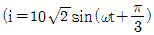
를 복소수의 극좌표 형식인 페이저(phasor)로 나타나면?- 10√2 ∠ π/3
- 10√2 ∠ -π/3
- 10 ∠ π/3
- 10 ∠ -π/3
(정답률: 60%)
63. 저항 1Ω과 인덕턴스 1H를 직렬로 연결한 후 60Hz, 100V의 전압을 인가할 때 흐르는 전류의 위상은 전압의 위상보다 어떻게 되는가?
- 뒤지지만 90° 이하이다.
- 90° 늦다
- 앞서지만 90° 이하이다.
- 90° 빠르다.
(정답률: 62%)
64. 단자 a와 b사이에 전압 30V를 가했을 때 전류 I가 3A 흘렀다고 한다. 저항 r(Ω)은?
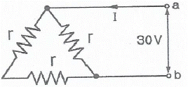
- 5
- 10
- 15
- 20
(정답률: 68%)
65. 전압과 전류가 각각
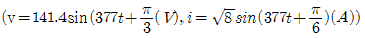
인 회로의 소비(유효)전력은 약 몇 W인가?- 100
- 173
- 200
- 344
(정답률: 45%)
66.
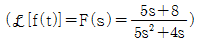
일 때, f(t)의 최종값 f(∞)는?- 1
- 2
- 3
- 4
(정답률: 77%)
67.
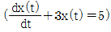
의 라플라스 변환은? (단,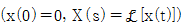
)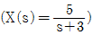
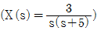
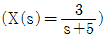
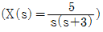
(정답률: 60%)
68. V1(s)을 입력, V2(s)를 출력이라 할 때, 다음 회로의 전달함수는? (단, G1=1, L1=1H)
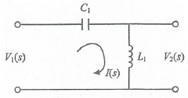
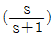
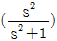
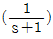
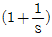
(정답률: 60%)
69. 그림과 같은 RC 직렬회로에 t=0에서 스위치 S를 닫아 직류 전압 100V를 회로의 양단에 인가하면 시간 t에서의 충전전하는? (단, R=10Ω, C=0.1F 이다.)
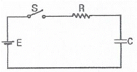
- 10(1-e-t)
- -10(1-et)
- 10e-t
- -10et
(정답률: 62%)
70. Y 결선된 대칭 3상 회로에서 전원 한 상의 전압이 Va=220√2sinwt(V)일 때 선간전압의 실효값 크기는 약 몇 V인가?
- 220
- 310
- 380
- 540
(정답률: 60%)
71. 다음 두 회로의 4단자 정수 A, B, C, D 가 동일한 조건은?
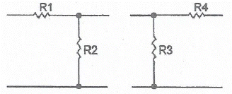
- R1=R2, R3=R4
- R1=R3, R2=R4
- R1=R4, R2=R3=0
- R2=R3, R1=R4=0
(정답률: 71%)
72. 3상 불평형 전압에서 불평형률은?
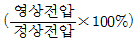
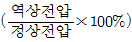
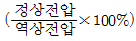
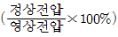
(정답률: 75%)
73. 평형 3상 저항 부하가 3상 4선식 회로에 접속되어 있을 때 단상 전력계를 그림과 같이 접속하였더니 그 지시 값이 W(W)이었다. 이 부하의 3상 전력(W)은?
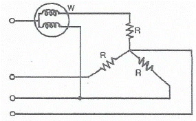
- √2W
- 2W
- √3W
- 3W
(정답률: 50%)
74. a+a2의 값은? (단, a=ej2π/3=1∠120°이다.)
- 0
- -1
- 1
- a3
(정답률: 57%)
75. 어떤 정현파 교류전압의 실효값이 314V일 때 평균값은 약 몇 V인가?
- 142
- 283
- 365
- 382
(정답률: 63%)
76. 코일의 권수 N=1000회이고, 코일의 저항 R=10Ω 이다. 전류 I=10A를 흘릴 때 코일의 권수 1회에 대한 자속이 ø=3×10-2Wb이라면 이 회로의 시정수(s)는?
- 0.3
- 0.4
- 3.0
- 4.0
(정답률: 67%)
77. 다음과 같은 4단자 회로에서 영상 임피던스(Ω)는?
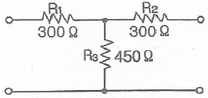
- 200
- 300
- 450
- 600
(정답률: 70%)
78. 전달함수 출력(응답)식 C(s)=G(s)R(s)에서 입력함수 R(s)를 단위 임펄스 δ(t)로 인가할 때 이 계의 출력은?
- C(s)=G(s)δ(s)
- C(s)=G(s)/δ(s)
- C(s)=G(s)/s
- C(s)=G(s)
(정답률: 56%)
79. 전압이 v=10sin10t+20sin20t(V)이고, i=20sin10t+10sin20t(A)이면, 소비(유효)전력 (W)는?
- 400
- 283
- 200
- 141
(정답률: 48%)
80. 평형 3상 Y 결선 회로의 선간전압이 Vt, 상전압이 Vp, 선전류가 It, 상전류가 Ip일 때 다음의 수식 중 틀린 것은? (단, P는 3상 부하전력을 의미한다.)
- Vt=√3Vp
- It=Ip
- P=√3VtItcosθ
- P=√3VpIpcosθ
(정답률: 62%)
부귀환율 β는 출력신호와 입력신호의 비율을 나타내는 값으로, 이 값이 클수록 출력신호가 입력신호에 비해 더 크게 증폭됩니다. 따라서, β 값을 증가시키면 출력신호의 왜곡이 커질 가능성이 있습니다.
따라서, β 값을 최소한으로 유지하면서 외율을 1%로 개선하기 위해서는 β 값이 가장 작은 0.08이 정답입니다.